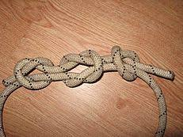
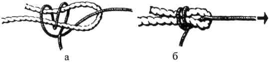

Приклади туристичних вузлів
Прямий вузол
Прямий вузол: а - прямий вузол з контрольними вузлами, б, в - неправильно зв' язаний вузол
Вузли для зв'язування мотузок. Потреба в цих вузлах виникає, коли є необхідність доточити коротку мотузку, зав'язати петлю навколо опори, зв'язати два кінці мотузки, щоб не заважали тощо. Майже всі вузли для того, щоб не розв'язувалися (мотузки не вислизнули), застосовуються разом з контрольними вузлами, які в'яжуть по обидва боки від основного. Згідно з Правилами змагань з спортивного туризму контрольні вузли треба в'язати не далі як 5 см від основного вузла, вільний кінець мотузки не повинен бути коротшим 5 см.
Прямий вузол в'яжеться дуже швидко та не потребує особливих зусиль, але коли мотузки навантажуються, то він сильно затягується і потребує багато часу для розв'язання. Тому для мотузок, які підлягають великому навантаженню його використовувати недоцільно.
Прямий вузол
Прямий вузол з контрольними вузлами
Прямий вузол в'яжеться дуже швидко та не потребує особливих зусиль, але коли мотузки навантажуються, то він сильно затягується і потребує багато часу для розв'язання. Тому для мотузок, які підлягають великому навантаженню його використовувати недоцільно.
Ткацький вузол

Ткацький вузол: Ткацький вузол а, б - етапи в'язання
Ткацький вузол також використовується для зв'язування мотузок однакової товщини, на які не діють великі навантаження. Школярі інколи називають цей вузол "чотири контрольні". Так, зав'язавши два контрольні вузли однією мотузкою навколо іншої і навпаки - ми отримаємо ткацький вузол.
Зустрічний вузол

Зустрічний вузол
Зустрічний вузол за своєю формою нагадує звичайний контрольний вузол, виконаний здвоєною мотузкою. Але різниця в тому, що навантаження діє на кінці мотузки, що "виходять" з різних сторін від основного вузла. Для того, щоб зав'язати зустрічний вузол, треба спочатку зав'язати контрольний вузол на одній мотузці. Потім кінець другої мотузки просмикується через контрольний немов назустріч кінцю першої, повністю повторюючи всі його вигини і укладається паралельно один одному.
Грейпвайн

Вузол "грейпвайн"
Грейпвайн подібний до ткацького і відрізняється лише тим, що при в'язанні контрольних вузлів мотузка двічі обвиває одна одну, а не один, раз як у ткацькому, і кількість цих вузлів лише 2
Брамшкотовий та академічний
В умовах походу виникає необхідність перекинути мотузку через перешкоду-річку, прірву, глибокий яр тощо. Звичайно, це зробити легше допоміжною мотузкою, а потім, прив'язавши до неї основну, організовувати переправу. Для зв'язування мотузок різної товщини, як вже вказувалося, застосовуються вузли брамшкотовий та академічний . Ці вузли надійні, добре тримають мотузки і легко розв'язуються. При в'язанні цих вузлів петля формується із товстішої мотузки і обв'язується тоншою, правильно формуючи малюнок вузла.
Брамшкотовий вузол: а - в 'язання вузла, б - навантажений вузол
Для в'язання брамшкотового вузла необхідно зробити петлю з основної мотузки. Допоміжну мотузку продівають через цю петлю, утворюють невелику петлю, через яку двічі просмикується її кінець, накручений навколо петлі основної мотузки. Для запобігання розв'язування на кінцях обох мотузок в'яжуться контрольні вузли.
Академічний вузол
В умовах походу виникає необхідність перекинути мотузку через перешкоду-річку, прірву, глибокий яр тощо. Звичайно, це зробити легше допоміжною мотузкою, а потім, прив'язавши до неї основну, організовувати переправу. Для зв'язування мотузок різної товщини, як вже вказувалося, застосовуються вузли брамшкотовий та академічний . Ці вузли надійні, добре тримають мотузки і легко розв'язуються. При в'язанні цих вузлів петля формується із товстішої мотузки і обв'язується тоншою, правильно формуючи малюнок вузла.
Академічний вузол:
Техніка в'язання академічного вузла нагадує техніку в'язання прямого одним кінцем. Основна мотузка утворює петлю, а допоміжна просмикується через неї, двічі обкручується і виймається з петлі основної мотузки. Треба слідкувати за тим, щоб кінці допоміжної мотузки виходили з однієї сторони петлі основної мотузки.
Вузли петель
Вузли петель. Призначення цих вузлів - утворення петлі, яку можна використовувати для прикріплення карабіну. Усі петлі, крім серединного провідника, використовуються при навантажені петля - мотузка, і тому не можна навантажувати обидва кінці мотузки в різні сторони, що виходять з вузла.
Вузол "провідник": а - в'язання петлею, б - в 'язання одним кінцем
В'язання вузла "провідник" одним кінцем нагадує в'язання зустрічного вузла. Для цього зав'язується контрольний вузол, кінець мотузки перекидається навколо опори і просмикується через вузол назустріч, паралельно дублюючи всі вигини контрольного. Незалежно від способув'язання, вузол "провідник" обов'язково потребує наявності контрольного вузла на короткому кінці мотузки.